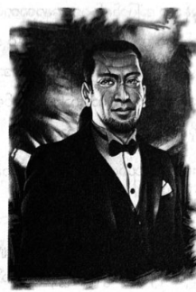

လက်ဆောင်လာပေးသော တိုက်တန်
မိုင်ဝက်ခန့် အဝေးကပင် အလံဖြူကို မြင်နိုင်သည်။ ဘောလုံးကွင်း တစ်ကွင်းစာ ကြီးမားသော အလံကြီးဖြစ်ကာ အရပ်ပေသုံးဆယ်မြင့်သော အပြာရောင် အရေပြားနှင့် မီးခိုးရောင်ဆံပင် ရှိသော ဘီလူးကြီးက သယ်ဆောင်လာ၏။
တာလီယာက …
“ဟိုက်ပါဘိုရီယန် ဘီလူးပဲ … မြောက်ပိုင်းမှာ နေကြတယ် … ခရိုနော့စ်နဲ့ ပူးပေါင်းသွားကြတယ်… သတင်းဆိုးပဲ … သူတို့က ပုံမှန်ဆို အေးအေးချမ်းချမ်း နေကြတာ ..”
“နင် တွေ့ ဖူးလို့လား”
“အင်း … အဲလ်ဘာတာမှာ ကိုလိုနီကြီး တစ်ခုလုံး ရှိတယ် … သူတို့နဲ့ နှင်းဘောလုံး ပြိုင်မပစ်သင့်ဘူး …”
အနီးသို့ရောက်လျှင် လူအရွယ်အစားနှင့် တမန်သုံးယောက် ပါလာကြောင်း တွေ့ရသည်။ ချပ်ဝတ်တန်ဆာ အပြည့်နှင့် သွေးနှောသူတစ်ယောက်၊ အနီရောင်ဆံပင်၊ အနက်ရောင်ဝတ်စုံနှင့် အမ်ပိုဆာတစ်ကောင်နှင့် အနောက်တိုင်း ဝတ်စုံ ဝတ်ထားသော အရပ်မြင့်မြင့် လူတစ်ယောက်ဖြစ်သည်။ အပ်ပိုဆာက အနောက်တိုင်းဝတ်စုံနှင့် လူ၏ လက်မောင်း ကို တွဲထားသဖြင့် ရုပ်ရှင်ရုံသို့ သွားမည့်စုံတွဲနှင့်ပင် ပိုတူနေ၏။ ဂရိုဗာ့ကို ပါစီ လှမ်းမေးလိုက်သည်။
“အနောက်တိုင်းဝတ်စုံနဲ့ တစ်ယောက်က တိုက်တန်လား”
စိတ်လှုပ်ရှားစွာဖြင့် ဂရိုဗာ ခေါင်းညိတ်ပြသည်။
“သူ့ကြည့်ရတာ မျက်လှည့်ဆရာနဲ့ တူတယ် … မျက်လှည့်ဆရာတွေကို ငါ မကြိုက်ဘူး … သူတို့က ယုန်တွေ ဆွဲထုတ် ပြတတ်တယ်”
ဂရိုဗာ့ကို ငေးကြည့်ရင်း ပါစီ မေးလိုက်မိသည်။
“မင်းက ယုန်ကို ကြောက်တာလား …”
“ပဲ … ဟဲ .. ဟဲ … ယုန်တွေက တကယ့်လူဆိုးတွေ … ဆေတာတွေဆီက မုန်လာဥတွေ အမြဲ ခိုးကြတယ် …”
တာလီယာ ချောင်းဟန့်လိုက်သည်။
“ဘာလဲ”
“မင်းရဲ့ ယုန်ကြောက်တဲ့ ရောဂါကို နောက်မှ ကုကြတာပေါ့ … သူတို့ ရောက်လာကြပြီ …”
အနောက်တိုင်းဝတ်စုံနှင့်လူ အရှေ့သို့ ထွက်လာသည်။ ပုံမှန်လူတစ်ယောက်ထက် အရပ်မြင့်ပြီး အရပ်ခုနစ်ပေခန့် ရှိကာ ဆံပင်အနက်ကို ကျစ်ဆံမြီးကျစ်ထားသည်။ အနက်ရောင် မျက်မှန်ဝိုင်းကို ဝတ်ထားပြီး မျက်နှာတွင် ထူးထူးခြားခြား ပင် ခြစ်ရာရှရာ များစွာကို တွေ့ရသည်။ တိရိစ္ဆာန် သေးသေးလေးများစွာ ကုတ်ခြစ်ခံ ထားရသည်နှင့် တူလှသည်။
“ပါစီဂျက်ဆန် … တွေ့ရတာ ဝမ်းသာစရာပဲ”
အမ်ပိုဆာမှာမူ ပါစီကို ကြည့်ပြီး မာန်ဖီနေ၏။ မနှစ်က သူ့ညီအစ်မ နှစ်ယောက်ကို ပါစီ သတ်ခဲ့ကြောင်း သတင်းကြားထားဟန် ရှိသည်။
“ဟိုနား သွားနေ …”
အနောက်တိုင်း ဝတ်စုံနှင့်လူက နှင်ထုတ်လိုက်လျှင် ခပ်ဝေးဝေးသို့ အမ်ပိုဆာ ထွက်ခွာသွားသည်။ ချပ်ဝတ် တန်ဆာ အပြည့်နှင့် သွေးနှောသူမှာ ဓားဖြင့် ချောင်းထိုးတတ်သူ အီသန် နာကာမူရာပင် ဖြစ်သည်။ နှာခေါင်းမှာ အထုခံ ထားရသော ခရမ်းချဉ်သီးနှင့် တူနေပြီး ဝီလီယံဘတ်ခ် တံတားပေါ်၌ ပါစီ ပေးခဲ့သော လက်ဆောင်ပင်။ ထိုရုပ်ကို မြင်ရ သဖြင့် ပါစီ ပို၍ နေသာထိုင်သာ ရှိသွားသည်။
“ဟေး … အီသန် … မင်း ရုပ်တော်တော် ခန့်လာတာပဲ”
အီသန်က စူးစူးဝါးဝါး စိုက်ကြည့်နေ၏။ အနောက်တိုင်းဝတ်စုံနှင့် လူက စကားစလိုက်သည်။
“အရေးကြီးတဲ့ ကိစ္စ ပြောရအောင် … ငါက ပရိုမီးသီးယပ်စ်ပါ”
ပါစီ အလွန်အံ့ဩသွားရသည်။
“မီးကို ခိုးခဲ့တဲ့ တိုက်တန်လား … ကျောက်တုံးကြီးမှာ လင်းတတွေနဲ့ အချည် ခံထားရတဲ့ တစ်ယောက်လား”
မျက်နှာမဲ့သွားရင်း မျက်နှာပေါ်ရှိ ဒဏ်ရာများကို ပရိုမီးသီးယပ်စ် စမ်းမိလိုက်သည်။
“လင်းတတွေ အကြောင်း မပြောဘဲ နေကြရအောင် … ငါက နတ်ဘုရားတွေ လီက ခိုးပြီး လူတွေကို ပေးခဲ့တယ် … ဒါနဲ့ပဲ အရမ်းကြင်နာတတ်တဲ့ ဇုစ်က ငါ့ကို ကျောက်ဆောင်မှာ သံကြိုးနဲ့ ခတ်ထားပြီး ထာဝရ နှိပ်စက်တော့တာပဲ”
“ဒါပေမဲ့ …”
“ငါ ဘယ်လို လွတ်လာသလဲ မေးမလို့လား … ဟာကြူလီ လက်ချက်ပေါ့ … ကြာခဲ့ပါပြီ … ငါက သူရဲကောင်း တွေကို ကြင်နာတတ်ပါတယ် … မင်းတို့ထဲက တချို့က ပေါင်းလို့သင်းလို့ ကောင်းပါတယ်”
“ခင်ဗျားနဲ့ ပါလာတဲ့ သူကတော့ ပေါင်းမကောင်းဘူး”
အီသန်ကို ကြည့်ရင်း ပြောသော်လည်း ပရိုမီးသီးယပ်စ်ကမူ အမ်ပိုဆာကို ပြောသည်ဟု အထင်လွဲသွားပုံရသည်။
“မိစ္ဆာတွေလား … အရမ်းကြီး မဆိုးလှပါဘူး … သူတို့ ဗိုက်ဝအောင် ကျွေးထားနိုင်ရင် မဆိုးပါဘူး … ကဲ … ပါစီ ဂျက်ဆန် … ဆွေးနွေးရအောင်”
အနီးရှိ ပျော်ပွဲစားထွက်ရန် စီစဉ်ထားသော စားပွဲတွင် ပါစီနှင့် ပရိုမီးသီးယပ်စ်တို့ ထိုင်လိုက်ကြသည်။ တာလီယာ နှင့် ဂရိုဗာက ပါစီ့ နောက်တွင် ရပ်စောင့်နေ၏။
အပြာရောင် ဘီလူးကြီးမှာ လက်ထဲမှ အလံတိုင်ကြီးကို သစ်ပင်တွင် မှီထားကာ အနီးရှိ ကလေးကစားကွင်း ထဲတွင် ကစားနေ၏။ ရေပန်းကို နင်းမိရာ တစ်ဝက် ပြိုကျသွားပြီး ခြေထောက်နှင့် ထိသော နေရာရှိ ရေများ အေးခဲကုန် ကြသည်။ တိုင်ဆန်လို ခပ်တုံးတုံးပင် ဖြစ်ပြီး ထိုဘီလူးကြီးကို ရန်သူအဖြစ် ရင်ဆိုင်ရမည်ကို စိတ် မကောင်းချေ။
ပရိုမီးသီးယပ်စ်မှာ လက်နှစ်ဖက် ယှက်ကာ ထိုင်နေပြီး သူ့ပုံစံမှာ ကြင်နာကာ ဉာဏ်ပညာ ကြီးမားပုံရသည်။
“ပါစီ… မင်းတို့ အင်အားက ဘာမှမရှိဘူး … နောက်ထပ်လာမယ့် တိုက်စစ်ကို မင်းတို့ ဘယ်လိုမှ မခုခံနိုင်ဘူး…”
“ကြည့်ကြသေးတာပေါ့”
ပရိုမီးသီးယပ်စ်၏ ပုံစံမှာ ပါစီတို့အတွက် အလွန်စိတ်ပူနေဟန် ရှိ၏။
“ပါစီ … ငါက ကြိုတွေးတဲ့ အတွေးကို ပိုင်စိုးတဲ့ တိုက်တန် … ဘာဆက် ဖြစ်လာမလဲ ငါ သိပါတယ် …”
ဂရိုဗာက ဝင်ပြော၏။
“မရိုးမသား ဆွေးနွေးတဲ့ တိုက်တန် ဆိုလည်း ဟုတ်တာပဲ …”
“ထားပါတော့ ဆေတာ … ဒါပေမဲ့ ပြီးခဲ့တဲ့ စစ်ပွဲတုန်းက နတ်ဘုရားတွေဘက်က ငါ နေခဲ့တယ်နော် … ခရိုနော့စ် ကို ငါ ပြောခဲ့တယ် … “ခင်ဗျားမှာ အင်အား မလုံလောက်ဘူး … ရှုံးလိမ့်မယ်လို့” … ငါ ပြောတဲ့အတိုင်း မှန်ခဲ့တာပဲ … ခုလည်း နိုင်မယ့်ဘက်ကို ငါ ရွေးရမှာပဲ … ဒီတစ်ခါတော့ ခရိုနော့စ်ကို ငါ ထောက်ခံရလိမ့်မယ် ..”
“ဒါကတော့ ဇုစ်က ခင်ဗျားကို ချုပ်ထားခဲ့တာကိုး”
“တစ်စိတ်တစ်ပိုင်းအရ မှန်ပါတယ် … လက်စားချေချင်တာကို ငါ မငြင်းပါဘူး … ဒါပေမဲ့ ဒီအကြောင်းတစ်ခု နဲ့တော့ ခရိုနော့စ်ကို ငါ ထောက်ခံမှာ မဟုတ်ဘူး … ငါက အကောင်းဆုံး လမ်းကိုပဲ ရွေးချယ်တာ … ဒီကို လာရတာ ကလည်း အခြေအနေကို မင်း နားလည်မယ်ထင်လို့ …”
စားပွဲပေါ်တွင် မြေပုံတစ်ပုံကို လက်နှင့်ဆွဲလိုက်ပြီး ပရိုမီးသီးယပ်စ်၏ လက်နှင့် ထိသောနေရာတွင် ရွှေရောင် လိုင်းများ ပေါ်လာကြသည်။
“ဒါ မန်ဟက်တန် မြေပုံ … ငါတို့စစ်တပ်တွေက ဒီနေရာ၊ ဒီနေရာတွေမှာ ရှိနေတယ် … မင်းတို့ အင်အားကို ငါတို့ သိပြီးသား … အင်အားချင်း နှစ်ဆယ်နဲ့ တစ်ယောက် ကွာတယ် …”
“ခင်ဗျားတို့ သူလျှိုက ဆက်တိုက် သတင်းပေးနေပုံပဲ”
ပရိုမီးသီးယပ်စ် တောင်းပန်သလို ပြုံးနေသည်။
“ပြီးတော့ ငါတို့အင်အားက နေ့တိုင်း တိုးလာနေတယ်... ခရိုနော့စ် ဒီညလည်း ထပ်တိုက်ခိုက်လိမ့်ဦးမယ် … မင်းတို့တွေ ရဲရင့်ပေမယ့် မန်ဟက်တန် တစ်မြို့လုံးကို ဘယ်လို ခုခံမှာလဲ … အင်ပါယာစတိတ် အဆောက်အအုံဆီ မင်းတို့ ဆုတ်ပြေးရမှာပဲ… အဲဒီမှာ မင်းတို့ ကျဆုံးရလိမ့်မယ်… ဒါတွေအကုန် ငါ ကြိုမြင်ပြီးသား”
ရေချယ်လ် ဆွဲထားသော ပုံထဲတွင် အင်ပါယာစတိတ် အဆောက်အအုံ အောက်ထိ ရောက်လာသော စစ်တပ်ကြီး ကို ပါစီ မြင်ယောင်လာမိသည်။ ဒဲလ်ဖိုင် နတ်ဆရာမ ငယ်စဉ်က ပြောခဲ့သောစကားကို ပြန်ကြားယောင်လာမိသည်။ “အနာဂတ်ကို မြင်နိုင်ပေမယ့် မပြင်ဆင်နိုင်” ဟု ဆိုခဲ့သည်။ ပရိုမီးသီးယပ်စ်မှာ အခိုင်အမာ ဆိုနေသဖြင့် သူ့ကို မယုံဘဲ မနေနိုင်သလို ဖြစ်စေသည်။
“လုံးဝ အဖြစ်မခံဘူး”
“နားလည်ထားပါ ပါစီ … ထရိုဂျန် စစ်ပွဲကို ပြန်တိုက်နေရသလိုပဲ … သမိုင်းထဲမှာ ပုံစံတွေက အတူတူပဲ … စစ်တပ်နှစ်ခု၊ တစ်ခုက ဝိုင်းခံထားရတယ် … ဒီစစ်ပွဲမှာ မင်းတို့က ခုခံသူတွေ … မင်းတို့က ထရွိုင်ပဲ … ထရိုဂျန် စစ်ပွဲ ဘာဖြစ်သွားသလဲ မင်း သိမယ်လို့ ထင်ပါတယ်”
“နေပါဦး … အင်ပါယာစတိတ် အဆောက်အအုံ ဓာတ်လှေကားထဲ သစ်သား မြင်းရုပ်ကြီး ထည့်ပေးချင်လို့လား … ကံကောင်းပါစေဗျာ ...”
ပရိုမီးသီးယပ်စ် ပြုံးလိုက်သည်။
“ထရွိုင်မြို့ လုံးဝ ပျက်စီးသွားတယ် ပါစီ.. ဒီမြို့ကိုရော ဒီလို ဖြစ်စေချင်လို့လား… လက်နက်ချလိုက်ရင် နယူး ယော့ခ်မြို့ ဘာမှမဖြစ်ဘူးပေါ့ … မင်းတို့ အားလုံးကိုလည်း ခွင့်လွှတ်ပေးမယ် … မင်းတို့တွေ အန္တရာယ် ကင်းရမယ်လို့ ငါ ကိုယ်တိုင် အာမခံတယ်ကွာ… အိုလံပတ်စ်ကို ခရိုနော့စ် သိမ်းပါစေ… ဘာလို့ ဂရုစိုက်နေမှာလဲ… နတ်ဘုရားတွေ တိုက်ဖွန်း လက်ချက်နဲ့ အသက် ထွက်ကုန်ကြမှာပဲဟာ …”
“ဟုတ်ပါပြီ … ခရိုနော့စ်က နယူးယော့ခ်မြို့ကို အလှကြည့်ထားမယ်လို့ ယုံရမယ်ပေါ့ …”
“သူက အိုလံပတ်စ်ကိုပဲ လိုချင်တာပါ … နတ်ဘုရားတွေရဲ့ အစွမ်းက သူတို့ရဲ့ ပလ္လင်နဲ့ ဆက်စပ်နေတယ် … သူ့ရဲ့ ရေအောက်နန်းတော် တိုက်ခိုက်ခံရတော့ ပိုဆိုက်ဒွန် ဘာဖြစ်သွားလဲ … မြင်တယ် မဟုတ်လား …”
အဖေ မည်မျှ အိုမင်းသွားကြောင်း ပြန်သတိရလာပြီး ပါစီ မျက်နှာပျက်သွားသည်။
“ဟုတ်တယ် … မင်းအတွက် ခက်ခဲမှာ ငါ သိပါတယ် … အိုလံပတ်စ်ကို ခရိုနော့စ် ဖျက်ဆီးလိုက်ရင် နတ်ဘုရား တွေ အကုန် မှေးမှိန် ပျောက်ကွယ်သွားလိမ့်မယ် … အရမ်း အင်အားနည်းသွားပြီး အလွယ်တကူ နှိမ်နင်းလို့ ရလာမယ် … တိုက်ဖွန်းနဲ့ အနောက်ဘက်မှာ ရန်ဖြစ်နေကြတုန်း ဒီဘက်ကို ဝင်တိုက်တာ ခရိုနော့စ်အတွက် အကောင်းဆုံးပဲ… လက်နက် ချလိုက်ရင် အသေအပျောက် နည်းမယ် … ခုခံရင်လည်း မင်းတို့ တတ်နိုင်တာ အချိန်ဆွဲရုံပဲ … သန်ဘက်ခါဆို တိုက်ဖွန်း နယူးယော့ခ်ကို ရောက်လာပြီ … မျှော်လင့်ချက် မရှိတော့ဘူး … အိုလံပတ်စ်ရော နတ်ဘုရားတွေပါ ပျက်စီးသွားကြ လိမ့်မယ် … ဒီလိုဆို မင်းတို့အတွက်ရော ဒီမြို့ကြီး အတွက်ပါ မကောင်းဘူး … ပိုပြီး အခြေအနေ ဆိုးကုန်လိမ့်မယ် … ဘယ်လိုပဲ ဖြစ်ဖြစ် တိုက်တန်တွေ ကမ္ဘာကြီးကို စိုးမိုးမှာကို မင်းမတားနိုင်ဘူး”
စားပွဲကို တာလီယာက ဝုန်းခနဲ ထုလိုက်သည်။
“ငါက အာတီးမစ်ရဲ့ အမဲလိုက်အဖွဲ့ဝင် … သေသေကျေကျေ တိုက်မှာပဲ … ပါစီ … နင် ဒီစကားတွေကို ဘာကိစ္စ နားထောင် နေရတာလဲ”
ပရိုမီးသီးယပ်စ် ထ၍ တိုက်ခိုက်လိမ့်မည်ဟု ပါစီ ထင်သော်လည်း သူက ပြုံးရုံသာ ပြုံးနေ၏။
“သတ္တိ အတော်ရှိတာပဲ … တာလီယာ ဂရေ့စ် …”
“အမေ့မျိုးရိုးနာမည် … ကျွန်မ မသုံးဘူး …”
“ထားပါတော့ ...”
တာလီယာ၏ မျိုးရိုးနာမည်ကို ပါစီ တစ်ခါမှ မကြားဖူး။ တမင် ကလိချင်၍ ပရိုမီးသီးယပ်စ် ဖွင့်ပြောမှန်း ပါစီ သဘောပေါက်၏။
“ဘယ်လိုပဲဖြစ်ဖြစ် မင်းတို့နဲ့ ငါ ရန်သူ မဖြစ်ချင်ပါဘူး … ငါက လူသားတွေကို အမြဲကူညီနေကျပါ”
တာလီယာက …
“ပေါက်ကရတွေ ပြောနေတာလား … နတ်ဘုရားတွေကို လူသားတွေ ပထမဆုံး စပူဇော်တော့ အကောင်းဆုံး အပိုင်းကို ရဖို့ ရှင် လှည့်စားခဲ့တယ် … မီးကို ခိုးပေးတာကလည်း နတ်ဘုရားတွေကို နှောင့်ယှက်ချင်လို့ … ကျွန်မတို့ကို ဂရုစိုက် လို့မှ မဟုတ်တာ …”
ပရိုမီးသီးယပ်စ် ခေါင်း တွင်တွင်ခါ နေ၏။
“မင်း နားမလည်ပါဘူး … မင်းတို့ အနာဂတ်ကို ငါ ပုံဖော်ပေးခဲ့တာ …”
သူ့လက်ထဲတွင် ရွှံ့တုံးတစ်တုံး ရောက်လာပြီး ပုံသဏ္ဌာန် ပြောင်းလဲသွားကာ လူရုပ်တစ်ရုပ် ဖြစ်လာသည်။ ထို ရွှံ့ရုပ် လေးမှာ စားပွဲပေါ်တွင် လျှောက်သွားနေ၏။
“လူတွေ စရှိတဲ့ အချိန်ကတည်းက မင်းတို့ကို အကြံဉာဏ်တွေ ငါ ပေးခဲ့တာပါ … မင်းတို့ကို ငါ ကယ်နိုင်တယ် ပါစီ … ငါပေးမယ့် ဉာဏ်ပညာအသစ်တွေက မီးကို ပေးခဲ့တုန်းကထက် ပိုထိရောက်နိုင်တယ် … ဒီလို တိုးတက်မှုမျိုး နတ်ဘုရားတွေ လက်အောက်မှာ မမျှော်လင့်လေနဲ့ … လုံးဝခွင့်ပြုမှာ မဟုတ်ဘူး … အခုအခြေအနေက ရွှေရောင်ခေတ်ကို မင်း ရွေးခွင့် ရှိနေပြီ … အဲလိုမှ မဟုတ်ရင်တော့ …”
ရွှံ့ရုပ်လေးကို ပရိုမီးသီးယပ်စ် လက်သီးနှင့် ထုလိုက်လျှင် ပြားချပ်သွားခဲ့သည်။ ခုံတန်းတွင် သွားထိုင်နေသော “အမ်ပိုဆာ” ကလည်း ပါစီ့ဘက် လှည့်ပြုံးပြသလိုလိုနှင့် သွားစွယ်များ ထုတ်ပြနေသည်။
“ပါစီ …. တိုက်တန်တချို့နဲ့ သူတို့သားသမီး အချို့က မဆိုးလှပါဘူး … မင်းလည်း ကယ်လ်လစ်ဆိုကို မြင်ဖူး တာပဲ”
ပါစီ့မျက်နှာ ဖိန်းတိန်းရှိန်းတိန်း ဖြစ်ချင်လာသည်။
“ဒါနဲ့ မဆိုင်ဘူးလေ …”
“ဘယ်လိုမဆိုင်ဘူးလဲ … ငါ့လိုပဲ သူလည်း ဘာမှ အပြစ်မလုပ်ခဲ့ဘူး … အက်လတ်စ်ရဲ့ သမီး ဖြစ်တာနဲ့ပဲ ထာဝရ အကျဉ်းချခံထားရတာ … ငါတို့က မင်းရဲ့ ရန်သူ မဟုတ်ဘူး … အဆိုးဆုံးတွေ မဖြစ်ချင်စမ်းနဲ့ … ငါတို့က ငြိမ်းချမ်းရေး ကမ်းလှမ်းနေတာပါ ….”
အီသန်နာကာမူရာကို ကြည့်ရင်း ပါစီ လှမ်းပြောလိုက်သည်။
“ဒီအခြေအနေကို မင်းတော့ သဘောကျမယ် မထင်ဘူး …”
“မင်း ဘာကို ပြောချင်တာလဲ …”
“ငါတို့ သဘောတူလိုက်ရင် မင်း လက်စားချေလို့ မရတော့ဘူးလေ … ငါတို့ကို သတ်လို့ မရတော့ဘူး … ဒီလို ဖြစ်စေ ချင်လို့လား …”
“ငါ လိုချင်တာက ငါ့ကို လေးစားဖို့ပဲ ဂျက်ဆန် … နတ်ဘုရားတွေက ဒါကို လုံးဝ ဂရုမစိုက်ခဲ့ဘူး … သွေးနှော သင်တန်းကိုသွားပြီး ငါက အရေးမကြီးတာလေး တစ်ခုနဲ့ပဲ ဟားမီးစ်အဆောင်ထဲ သွားနေရမှာလား … မိဘရဲ့ အသိအမှတ် ပြုတာလေးတောင် မရတော့ဘူးလား …”
လွန်ခဲ့သောလေးနှစ်က သူ့ကိုသတ်ရန် လုပ်ခ် ကြိုးစားခဲ့ချိန်က ပြောခဲ့သော စကားနှင့် အီသန် ပြောနေသော စကားများ မကွာလှ။
“မင်းအမေက ကလဲ့စား နတ်သမီးပဲ … ငါတို့က ဒါကို လေးစားရမှာလား”
“နမ်မစစ်က ညီမျှမှုကို ကိုယ်စားပြုတာ … လူတွေ ကံကောင်းလွန်းလာရင် သူက ဖျက်ဆီးပစ်လိုက်တယ် …”
“အဲဒါကြောင့် မင်းမှာ မျက်စိတစ်ဖက် မရှိတာလား”
“ဒါ အပေးအယူကွ… ဒီအတွက် တစ်နေ့မှာ ငါဟာ အပြောင်းအလဲ လုပ်နိုင်ရမယ် … နတ်လေးတွေကို လေးစားမှု ရအောင် လုပ်နိုင်မယ်လို့ အမေက ကတိပေးထားတယ် … မျက်စိတစ်ဖက် ပေးရတော့ ဘာအရေးလဲ …”
“တကယ်တော်တဲ့ အမေမျိုးပဲ …”
“အနည်းဆုံးတော့ ကောင်းကောင်းဆိုးဆိုး အမေက ကတိတည်တယ် … အိုလံပစ် တောင်ပေါ်က နတ်တွေလို မဟုတ်ဘူး ……”
“ဟုတ်ပ … မင်းအသက်ကို ငါ ကယ်လိုက်တယ် … မင်းက ခရိုနော့စ်နဲ့ ပေါင်းပြီး ကျေးဇူးပြန်ဆပ်တယ် … တကယ် မျှတတဲ့ သူပဲ”
ဓားရိုးပေါ် အီသန် လက်ရောက်သွားသော်လည်း ပရိုမီးသီးယပ်စ် က လှမ်းတားလိုက်သည်။
“တော်တော့ … တော်တော့ … ငါတို့က ငြိမ်းချမ်းရေး ဆွေးနွေးဖို့ လာတာ”
ပရိုမီးသီးယပ်စ်မှာ ပါစီ့ဒေါသကို နားလည်နိုင်ရန် ကြိုးစားနေပုံရပြီး အတန်ကြာမှ ခေါင်းတဆတ်ဆတ် ညိတ်လိုက်သည်။
“လုပ်ခ်ရဲ့ကိစ္စကို မင်း စိတ်ပျက်နေတာပဲ… ဟက်စ်တီယာက မင်းကို ဇာတ်လမ်း အပြည့်အစုံ ပြခဲ့တာ မဟုတ်ဘူး … မင်း နားလည်ထားသင့်တယ် …”
တာလီယာဆီမှ အလန့်တကြား အော်သံကြားရပြီး ပါစီ မလှုပ်နိုင်ခင်မှာပင် ပရိုမီးသီးယပ်စ်က လက်ချောင်း တစ်ချောင်းဖြင့် သူ့နဖူးကို ထောက်ထားလိုက်သည်။
♦️🌟♦️
မေကတ်စ်တဲလ်လန်၏ ဧည့်ခန်းထဲသို့ ပါစီ ရုတ်တရက် ရောက်လာကြောင်း တွေ့ရသည်။ တံခါးပေါက်မှ လှမ်းကြည့်လျှင် ထမင်းစားစားပွဲ၌ ထိုင်နေသော တာလီယာကို တွေ့ရပြီး မစ္စ ကတ်စ်တဲလ်လန်က ခြေထောက်မှ ဒဏ်ရာ ကို ပတ်တီး စည်းပေးနေ၏။ သူမ၏ ဘေးတွင် ခုနစ်နှစ်သမီး အန်နာဘတ် ရှိနေပြီး မီဒူဆာ အရုပ်လေးဖြင့် ကစားနေ၏။
ဧည့်ခန်းထဲတွင် ဟားမီးစ်နှင့် လုပ်ခ်တို့ ရပ်နေကြ၏။ ဟားမီးစ်မှာ အပြာရောင် အားကစားဝတ်စုံ နှင့် အပြေး သမားပုံ ရှိပြီး ဖိနပ်တွင် တောင်ပံလေးများ ရှိနေသည်။
“ဘာလို့ ခုမှ ပေါ်လာရတာလဲ …”
လုပ်ခ်က မေးလိုက်သည်။ သူ့ပုံစံမှာ ရန်ဖြစ်ရန် အသင့်ရှိနေပုံ ပေါ်၏။
“ကျွန်တော် ဆုတောင်းနေခဲ့တာ ကြာလှပြီ … တစ်ခါမှ ပေါ်မလာဘူး … ဒီ အိမ်ထဲမှာ သူနဲ့ တစ်ယောက်တည်း ထားခဲ့တယ် …”
သူ့အမေကို အမေ ဟုပင် ခေါ်ရန် လုပ်ခ်၌ အင်အားရှိပုံမရ။ လှည့်ပင် မကြည့်ဘဲ မီးဖိုထဲ လက်ညှိုးထိုးပြ၏။
“မင်းအမေကို မစော်ကားချင်ပါနဲ့ လုပ်ခ်… မင်းအမေလည်း တတ်နိုင်သမျှ အကောင်းဆုံး ကြိုးစားခဲ့တာပဲ … ငါက မင်းရဲ့ လမ်းမှာ ဝင်ပါခွင့်မရှိဘူး … နတ်ဘုရားတွေရဲ့ ကလေးတွေအားလုံး ကိုယ့်လမ်းကိုယ် ဖောက်ကြရတယ် …”
“ဒီလိုဆိုတော့ လမ်းပေါ်မှာနေပြီး မိစ္ဆာတွေနဲ့ အမြဲ တိုက်ခိုက်နေရတာ ကျွန်တော် ကောင်းဖို့ အတွက်ပဲလား …”
“မင်းက အဖေ့ရဲ့သားပါ … မင်းမှာ ဒီလိုနေနိုင်တဲ့အစွမ်း ရှိပါတယ် … အဖေဆို ငယ်ငယ်တုန်းက ပုခက်ထဲက လေးဘက်ထောက် ထွက်ပြီး …”
“ကျွန်တော်က နတ် မဟုတ်ဘူး … တစ်ခါလောက် လေ့လာပြီး အားပေးပါလား … တစ်ခါလောက်လေး ကူညီ ပါလား … သူ … သူ ရူးပြီး ကျွန်တော့်ကို ကိုင်လှုပ်တယ် … ကံကြမ္မာ အကြောင်း ပေါက်ကရတွေ ပြောတယ် … အဲဒီ အရောင် တောက်နေတဲ့ မျက်လုံးတွေနဲ့ ရှာမတွေ့ဖို့ ဘီရိုထဲ ပုန်းနေရတယ် … ကျွန်တော် ကြောက်နေတာ ကိုရော သိရဲ့လား … ဘယ်အချိန် အိမ်က ထွက်ပြေးခဲ့သလဲ ဆိုတာကော သိရဲ့လား …”
မီးဖိုထဲတွင် မစ္စ ကတ်စ်တဲလ်လန်မှာ ရောက်တတ်ရာရာများ ပြောနေပြီး အများစုမှာ လုပ်ခ် ငယ်စဉ်က အကြောင်းများ ဖြစ်ကြသည်။ တာလီယာမှာ ပတ်တီး စည်းထားသော ခြေထောက်အား ကိုင်ကာ စိတ်လှုပ်ရှားနေသည်။ အန်နာဘတ် က ဧည့်ခန်းထဲရှိ လုပ်ခ်ကို လှည့်ကြည့်ရင်း မီးကျွမ်းနေသော ကွက်ကီးကို ပြကာ “သွားရအောင်” ဟု အသံတိတ် ပြောနေ၏။
“လုပ်ခ် … သားကို အဖေ ဂရုစိုက်ပါတယ် … ဒါပေမဲ့ နတ်တွေက လူသားတွေရဲ့ကိစ္စမှာ ဝင်ပါလို့မရဘူး … ဒါ ရှေးကာလ ကတည်းက ရှိခဲ့တဲ့ စည်းမျဉ်းစည်းကမ်းတွေပဲ … အထူးသဖြင့် သားရဲ့ ကံကြမ္မာက …”
ဟားမီးစ် စကား ဆက်မပြောနိုင်ဘဲ ဖယောင်းတိုင်မီးကိုသာ ငေးကြည့်ရင်း အတိတ်မှ အရိပ်ဆိုး တစ်ခုခုကို ပြန်သတိရ နေပုံ ပေါ်၏။
“ဘယ်လို … ကျွန်တော့်ကံကြမ္မာ က ဘာဖြစ်နေလို့လဲ”
“သား … မင်း ဒီကို ပြန်မလာသင့်ဘူး … မင်းတို့ သားအမိ နှစ်ယောက်လုံး အတွက် စိတ်ပျက်စရာပဲ ဖြစ်မှာ … ဒါပေမဲ့ သားအသက်က အကူအညီမပါဘဲ ပြေးနေရမယ့် အရွယ် မဟုတ်တော့ဘူး … သွေးနှောသင်တန်းက ခိုင်ရွန်ကို အဖေ ပြောပြီး ဆေတာ တစ်ယောက် လွှတ်ပေးမယ်”
“ခင်ဗျား မကူညီလည်း ဘာမှမဖြစ်ဘူး … ကဲ … ပြောပါဦး … ဘာကံကြမ္မာလဲ ဆိုတာ ..”
ဟားမီးစ်မှာ သူ့သားကို တစ်ခါမှ မတွေ့ဖူးသလို ငေးကြည့်နေသည်။ ရုတ်တရက် ပါစီ့ကျောထဲ စိမ့်တက်လာ၏။ မေကတ်စ်တဲလ်လန် တတွတ်တွတ် ရွတ်နေသောအကြောင်းကို ဟားမီးစ် သိပုံရသည်။ သူ့မျက်နှာ အမူအရာအရ သေချာ သိကြောင်း ပါစီ ခံစားရ၏။ တစ်နေ့နေ့တွင် လုပ်ခ်တစ်ယောက် မိစ္ဆာများနှင့် ပူးပေါင်းသွားမည်ကို ဟားမီးစ် ကြိုသိ နေသည်။
“သား … အဖေက ခရီးသွားနတ် … လမ်းတွေကို စိုးပိုင်တဲ့သူ … အဖေ သေသေချာချာ သိတာက ကိုယ့်လမ်း ကိုယ် လျှောက်ကြရတယ် ဆိုတာပဲ … အဖေ ဘယ်လောက်ပဲ ရင်နာပါစေ ဝင်ပါလို့မရနိုင်ဘူး …”
“ကျွန်တော့်ကို အဖေ မချစ်ပါဘူး …”
“အဖေ … သားကို တကယ်ချစ်ပါတယ် … သင်တန်းကို သွားပါ … သား အတွက် ခရီးစဉ်တစ်ခု အဖေ ဖန်တီး ပေးပါ့မယ် … ဟိုက်ဒရာကို နှိမ်နင်းတာမျိုး … ဟက်စ်ပီရီးဒီးစ်တွေ ဆီက ရွှေပန်းသီး ခိုးတာမျိုးပေါ့ … နာမည်ကျော် သူရဲကောင်း ဖြစ်ခွင့် သား ရလာမှာပါ … ပြီးရင်တော့ ...”
“ပြီးရင် ဘာဖြစ်သလဲ ….”
လုပ်ခ်၏ အသံ တုန်ယင်လာသည်။
“အမေ… ဘာတွေ မြင်လိုက်ရလို့ ဒီလိုပုံစံ ဖြစ်သွားတာလဲ… ကျွန်တော် ဘာဖြစ်မှာလဲ … ချစ်တယ်ဆိုရင် ပြောပြ သင့်တယ် …”
ဟားမီးစ် မျက်နှာအမူအရာ ပြန်တင်းမာလာခဲ့သည်။
“မဖြစ်ဘူး …”
“ဒါဆို ခင်ဗျား ဘာဂရုစိုက်တာလဲ …”
လုပ်ခ် အော်ဟစ်လိုက်လျှင် မီးဖိုထဲမှ မေ ကတ်စ်တဲလ်လန်၏ အသံထွက်လာ၏။
“လုပ်ခ် … သားလေးလား … သား ဘာဖြစ်လို့လဲ”
တစ်ဖက်သို့ လှည့်သွားသော်လည်း လုပ်ခ် မျက်နှာ၌ မျက်ရည်စများကို ပါစီ မြင်နေရသည်။
“ပြဿနာမရှိပါဘူး … ကျွန်တော့်မှာ မိသားစုအသစ် ရှိတယ် … ခင်ဗျားတို့ နှစ်ယောက်လုံးကို မလိုပါဘူး …”
“ငါက မင်းအဖေကွ …”
“အဖေဆိုတာ အနားမှာရှိဖို့ လိုတယ် … ခင်ဗျားကို ဘယ်တုန်းက တွေ့ရလို့လဲ … တာလီယာ၊ အန်နာဘတ် … လာကြ … သွားကြစို့ …”
မေကတ်စ်တဲလ်လန်က လှမ်းခေါ်၏။
“သား … မသွားနဲ့ဦးလေ … နေ့လယ်စာ ပြင်ထားတယ် …”
အခန်းထဲမှ ခြေသံပြင်းပြင်းနှင့် လုပ်ခ် ထွက်သွားပြီး တာလီယာနှင့် အန်နာဘတ်တို့နောက်မှ လိုက်သွားကြသည်။ နောက်မှလိုက်ရန် ပြင်နေသော မေကတ်စ်တဲလ်လန်ကို ဟားမီးစ်က ဆွဲထားလိုက်၏။ အခန်းတံခါး ဝုန်းခနဲ ပိတ်သွားချိန် တွင် မေကတ်စ်တဲလ်လန်မှာ ဟားမီးစ်၏ လက်ထဲတွင် ခွေကျသွားကာ တုန်ယင်နေ၏။ မျက်စိ ပြန်ပွင့်လာချိန်တွင် အစိမ်းရောင်အလင်းများ တောက်ပနေပြီး ဟားမီးစ်၏ ပခုံးကို အတင်းမှီတွယ်ထားသည်။
“ကျွန်မသား … အန္တရာယ်ကြီး … ဆိုးလိုက်တဲ့ကံ”
“ငါ သိပါတယ် အချစ်ရယ် … ငါ သိပါတယ်”
ဝမ်းနည်းစွာဖြင့် ဟားမီးစ်က နှစ်သိမ့်နေသည်။ ပုံရိပ်များ ပျောက်ကွယ်သွားပြီး ပါစီ့နဖူးပေါ်ရှိ လက်ကို ပရိုမီးသီးယပ်စ် ပြန်ရုပ်သိမ်းသွား၏။
“ပါစီ … ဘာဖြစ်သွားတာလဲ …”
တာလီယာ မေးမှပင် သူ့တစ်ကိုယ်လုံး ချွေးများ ရွှဲနစ်နေကြောင်း ပါစီ သတိထားမိလာသည်။ စာနာဟန်ဖြင့် ပရိုမီးသီးယပ်စ်က နှစ်သိမ့်၏။
“စိတ်ပျက်စရာ မကောင်းဘူးလား … ဘာဖြစ်လာမယ်ဆိုတာ နတ်ဘုရားတွေ သိနေရက်သားနဲ့ ဘာမှမလုပ်ကြ ဘူး … သူတို့ကလေးတွေကိုတောင် ပစ်ထားကြတယ် … ဟောကိန်းကို ပြောပြဖို့ သူတို့ ဘယ်လောက် အချိန်ယူခဲ့သလဲ ပါစီ … မင်း ဘာဖြစ်မယ်လို့ မင်းအဖေရော မသိဘူး ထင်သလား”
ထိုအဖြေကို ပြန်မဖြေနိုင်လောက်အောင် ပါစီ ငေးကြောင်နေ၏။ ဂရိုဗာက သတိပေးလိုက်သည်။
“ပါစီ … သူမင်းကို လှည့်စားနေတာ … မင်းကို ဒေါသထွက်အောင် လုပ်နေတာ”
စိတ်ခံစားချက်များကို သိနိုင်စွမ်းရှိသော ဂရိုဗာမှာ ပရိုမီးသီးယပ်စ်၏ အကြံအောင်မြင်နေပြီဟု ထင်ပုံရသည်။ ပရိုမီးသီးယပ်စ်က ထပ်မေးလိုက်သည်။
“မင်းသူငယ်ချင်း လုပ်ခ်ကို မင်း တကယ်ပဲ အပြစ်တင်နိုင်သလား … မင်းဆိုရင်ကော … ကံကြမ္မာရဲ့ ထိန်းချုပ် တာကို ခံနေမှာလား … ခရိုနော့စ် ပေးတဲ့ အခွင့်အရေးက ဒီ့ထက် ပိုကောင်းနေတာပဲ …”
လက်သီးကို ပါစီ တင်းတင်းဆုပ်ထားမိသည်။ ပရိုမီးသီးယပ်စ်ပြသော မြင်ကွင်းကို မည်မျှမုန်းမုန်း ခရိုနော့စ်ကို ထို့ထက် အဆများစွာ ပို၍မုန်း၏။
“ဒီလိုညှိနှိုင်းကြရအောင်… ခရိုနော့စ်ရဲ့တပ်တွေကို ပြန်ဆုတ်ခိုင်းလိုက်… လုပ်ခ်ကတ်စ်တဲလ်လန်ရဲ့ ခန္ဓာကိုယ်ထဲ ကလည်း ထွက်သွားပေး … တာတာရပ်စ်ထဲကို ပြန်တော့ … ဒါဆို သူ့ကို ချမ်းသာပေးလိုက်မယ်လို့ ပြောလိုက်”
အမ်ပိုဆာဆီမှ မာန်ဖီသံကိုကြားရပြီး ဆံပင်များမှာ မီးတောက်များ ဖြစ်လာကြသည်။ သို့သော် ပရိုမီးသီးယပ်စ် မှာမူ သက်ပြင်းကိုသာ ချလိုက်၏။
“မင်း စိတ်ပြောင်းမယ်ဆိုရင် မင်းအတွက် လက်ဆောင်ပါလာတယ်”
စားပွဲပေါ်တွင် ဂရိမြေအိုးတစ်လုံး ရောက်လာပြီး သုံးပေခန့်မြင့်ကာ တစ်ပေခန့်လုံးပတ်ရှိ၍ အဖြူ၊ အနက် ဒီဇိုင်း ပုံများ ရှိကြသည်။ အဖုံးကို သားရေဖြင့် ပတ်စည်းထား၏။ ဂရိုဗာ့ထံမှ အလန့်တကြားအသံကို ကြားရ၏။
တာလီယာက …
“ဒါက … ဒါက …”
"ဟုတ်တယ် … မင်း သိသားပဲ ..”
ပရိုမီးသီးယပ်စ်က ထောက်ခံ၏။ မြေအိုးကိုကြည့်ရင်း ထူးခြားလှသော ကြောက်လန့်မှုတစ်ခုကို ခံစားရ သော်လည်း ဘာကြောင့်ဟု ပါစီ နားမလည်။ ပရိုမီးသီးယပ်စ်က ရှင်းပြလိုက်သည်။
“ငါ့ခယ်မ ပန်ဒိုရာပိုင်တဲ့ ပစ္စည်း …”
“ပန်ဒိုရာ သေတ္တာလား …”
ပရိုမီးသီးယပ်စ် ခေါင်းခါလိုက်သည်။
“ဘယ်လိုက ဘယ်လို သေတ္တာဖြစ်သွားသလဲ ငါ မသိဘူး … ဘယ်တုန်းကမှ သေတ္တာ မဟုတ်ခဲ့ဘူး … မြေအိုး တစ်လုံးပါပဲ … ပန်ဒိုရာ ဒီအိုးကို ဖွင့်ခဲ့မိလို့ လူတွေကို ဒုက္ခပေးနေတဲ့ ကြောက်ရွံ့မှု၊ သေမင်း၊ ဆာလောင်မှုနဲ့ ရောဂါတွေ ထွက်လာကြတာ ..”
“ငါလည်း ပါတယ် ….”
အမ်ပိုဆာက ဝင်ပြော၏။
“မှန်တာပေါ့ … ပထမဆုံး အမ်ပိုဆာကလည်း ဒီမြေအိုးထဲမှာ ပါခဲ့တာပဲ … ငါ စိတ်ဝင်စားတာက ပုံပြင်တွေက ပန်ဒိုရာကို ဘာလို့ အမြဲ အပြစ်တင်ကြသလဲ ဆိုတာပဲ … နတ်ဘုရားတွေက လူတွေကို မစပ်စုသင့်ဘူးလို့ သင်ခန်းစာ ပေးချင်တာ … ပြောသလို နာခံစေချင်တာ … အမှန်အတိုင်း ပြောရရင် ဒီမြေအိုးကို လုပ်ခဲ့တာ ဇုစ်နဲ့ နတ်ဘုရားတွေပဲ ပါစီ … ငါ့မိသားစုကို လက်စားချေချင်တာ … ငါ့ညီ အီပီမီသီးယပ်စ်နဲ့ သူ့ဇနီး ပန်ဒိုရာကို ဒုက္ခပေးတယ် … ဒီမြေအိုးကို သူ ဖွင့်မယ်ဆိုတာ နတ်တွေက သိပြီးသား… ငါတို့နဲ့ တူတူရောပြီး လူသားတွေကိုပါ ဒဏ်ခတ်ဖို့ ဝန်မလေးခဲ့ကြဘူး …”
ဟေးဒီးစ်နှင့် မာရီယာ ဒီအန်ဂျလိုအကြောင်း ပါစီ သတိရလာသည်။ ဇုစ်မှာ ဟိုတယ်တစ်ခုလုံးကို ဖောက်ခွဲပစ်ပြီး ဟောကိန်း၏ အန္တရာယ်ကို ကာကွယ်ရန် ကလေးနှစ်ယောက်အား သတ်ဖို့ကြိုးစားခဲ့သည်။ အပြစ်မရှိသော မိန်းမ တစ်ယောက် သေသွားခဲ့သော်လည်း ထိုကိစ္စအတွက် အိပ်ရေးပျက်မည့်ပုံ မရှိ။ ဟေးဒီးစ်မှာလည်း ထူးမခြားနား။ ဇုစ်ကို လက်စားမချနိုင်သဖြင့် နတ်ဆရာမကို ကျိန်စာတိုက်ခဲ့သည်။ ဟားမီးစ်မှာလည်း လုပ်ခ်ကို သတိပေးနိုင်လျက်နှင့် လျစ်လျူ ရှုခဲ့သည်။ ပရိုမီးသီးယပ်စ်က ပါစီ့ အတွေးများကို ဝင်ကာ နှောင့်ယှက်နေခြင်းလည်း ဖြစ်နိုင်၏။ နတ်ဘုရားများလည်း တိုက်တန်များနှင့် ဘာမှ ထူးမခြားနားဟု မတွေးဘဲ မနေနိုင်။
ပန်ဒိုရာမြေအိုးကို ပရိုမီးသီးယပ်စ် တတောက်တောက် ခေါက်ရင်းနှင့် ပြောလိုက်သည်။
“ပန်ဒိုနာ ဖွင့်ပြီးချိန်မှာ တစ်ခုပဲ ကျန်ရစ်တယ်”
“မျှော်လင့်ချက် …”
“အမှန်ပဲ ပါစီ … မျှော်လင့်ချက်ဝိညာဉ် အဲလ်ပစ်ပဲ … သူက လူသားတွေကို ဘယ်တော့မှ စွန့်ခွာမသွားဘူး … သူ့ကို လွှတ်ပေးဖို့ တတ်နိုင်တာက လူသားတွေပဲ”
တိုက်တန်က မြေအိုးကို ပါစီ့ ဘက်သို့ တွန်းပို့လိုက်သည်။
“နတ်ဘုရားတွေအကြောင်း အမှတ်ရနေစေဖို့ ဒါကို ပေးခဲ့မယ် … အဲလ်ပစ်ကို သိမ်းထားချင်လည်း သိမ်းထား … ပျက်စီးမှုတွေ မြင်ရတာ လုံလောက်ပြီလို့ ထင်ရင်တော့ မြေအိုးကို ဖွင့်လိုက် … မျှော်လင့်ချက်ကို လက်လွှတ်လိုက်ပြီ ဆိုတာနဲ့ မင်းတို့ လက်နက်ချလိုက်ပြီလို့ ငါ သိတယ် … ခရိုနော့စ် မရက်စက်စေရဘူးလို့ ငါ အာမခံတယ် … အသက် ရှင်ခွင့် ပေးပါလိမ့်မယ် …”
မြေအိုးကို ကြည့်ရင် ဆိုးဆိုးဝါးဝါး ခံစားရ၏။ ပန်ဒိုရာမှာလည်း သူ့လိုပင် အာရုံစူးစိုက်ရ ခက်သော ရောဂါရှိပုံ ရသည်။ မြေအိုးအဖုံး ဖွင့်ခြင်း၊ မဖွင့်ခြင်းက ဟောကိန်းထဲရှိ သူ့ရွေးချယ်မှုပေလားဟု မစဉ်းစားဘဲ မနေနိုင်။
“မလိုချင်ဘူး …”
“နောက်ကျသွားပြီ … လက်ဆောင်က ပေးပြီးပြီ … ပြန်ပေးလို့မရတော့ဘူး”
ပရိုမီးသီးယပ်စ် မတ်တတ်ရပ်လိုက်လျှင် အမ်ပိုဆာက အပြေး ရောက်လာကာ လက်ချင်း တွဲလိုက်၏။
“ပိုရီယန် … အလံယူခဲ့ … ပြန်ကြမယ်”
“ပါစီ …”
ဘီလူးကြီးက တစ်ခွန်းသာ ပြန်ဖြေ၏။
“မကြာခင် တွေ့ကြမှာပါ ပါစီဂျက်လန် … ဘယ်လိုနည်းနဲ့ပဲ ဖြစ်ဖြစ်ပေါ့ …”
နောက်ဆုံးတစ်ကြိမ်အဖြစ် အီသန်နာကာမူရာက ပါစီကို မုန်းတီးစွာ ကြည့်သွားခဲ့သည်။ ထို့နောက် တမန်အဖွဲ့မှာ ပြန်၍ ထွက်ခွာတော့သည်။
♦️🌟♦️